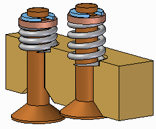
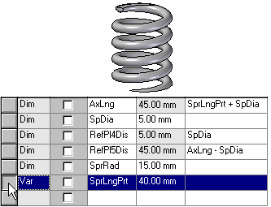
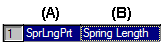
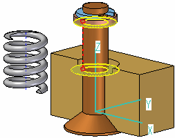
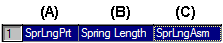
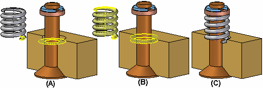
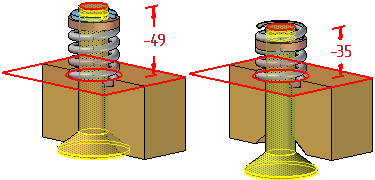
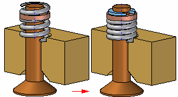
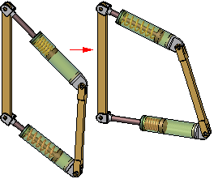

Adjustable parts in assemblies
In some designs, there are parts that must react to changing conditions in the assembly. For example, a spring that is compressed or uncompressed based on the position of other parts in the assembly.

The Adjustable Parts functionality in Solid Edge allows you to define parameters in a part model that will adjust with respect to corresponding parameters within the assembly. This allows you to control the size and shape of the part based on parameters you define in the assembly.
When you specify that a part is adjustable, the design body in the part model does not change when the assembly parameters change. An associative copy of the design body in the assembly changes. The associative copy of the design body is placed in the assembly automatically and is managed by Solid Edge when you specify that a part is adjustable within the context of the assembly.
This allows you to place several occurrences of an adjustable part into an assembly, and each occurrence of the adjustable part will conform to the current parameter values for that occurrence of the part. For example, one occurrence of a spring can be shown compressed while another occurrence of the spring can be shown uncompressed.

Only the design body for an adjustable part is associatively copied to the assembly. If the adjustable part contains construction bodies, they are not associatively copied to the assembly.
Making a part adjustable
To make a part adjustable within the context of an assembly, you first must define the parameters you want to adjust in the part document. You can then define corresponding parameters in the Assembly environment.
You can use driving dimensions and variables that control a feature, reference plane, or construction element as the parameters to define an adjustable part.
When you specify that a part is adjustable, you cannot in-place activate the part using the Edit command. You can use the Open command to open the part.
Defining the part parameters
The Adjustable Part command on the Tools tab in the Part or Sheet Metal environments displays the Adjustable Part dialog box so you can define or edit the adjustable parameters.
When the Adjustable Part dialog box is displayed, you can select features to display their dimensions, or you can click the Variable Table button on the Adjustable Part dialog box to display the variable table.
For example, to make the length of the spring shown adjustable, you can add the variable which controls spring length: SprLngPrt, to the adjustable parameters list by selecting the variable in the Variable Table.

When you add a variable or dimension to the Adjustable Part dialog box, the parameter name is added to the Variable Name column (A). You can also add text to the Notes column (B) to make it easier to remember later what aspect of the part the adjustable parameter controls.

Placing adjustable parts in an assembly
When adding an adjustable part to an assembly, you should place and position the parts which interact with the adjustable part first. This allows you to use the surrounding parts to define the assembly parameters required to complete the process. You can specify whether an adjustable part is adjustable or rigid in the assembly when placing the part or after you position the part in the assembly.
When you drag and drop an adjustable part into an assembly, a dialog box is displayed that allows you to specify whether the part is rigid or adjustable.
When you set the Place Rigid option, the part placement process proceeds as it would for a typical part. You can then define assembly relationships to position the part in the assembly. An adjustable part placed as rigid in an assembly behaves the same as any other part in an assembly.
When you set the Place Adjustable option, the part placement process is temporarily suspended so you can define the adjustable parameters in the assembly using the Adjustable Part dialog box.
When positioning an adjustable part, the option to use a separate Place Part window is not available. The part is placed in the assembly window so you can define the adjustable parameters and the assembly relationships in one window.
Defining the assembly parameters
In addition to the options for selecting driving dimensions and variables, the Adjustable Part dialog box in the Assembly environment contains options that allow you to define a measurement variable. This allows you to use geometry on other parts in the assembly to define variables which will control the size and shape of the adjustable part in the assembly.
The measurement variable options activate one of the Measurement commands that are also available on Inspect→Measure. For example, you can use the Measure Minimum Distance option to specify that the minimum distance between the two faces shown controls the height parameter of the part.

After you select the elements in the assembly that define the distance you want to measure, an assembly variable is created automatically and added to the Assembly Variable cell in the Adjustable Part dialog box for the adjustable part you are placing or editing.
There are three columns in the Adjustable Part dialog box in the Assembly environment: Part Variable (A) Notes (B), and Assembly Variable (C). In this example, the part variable SprLngPrt is controlled by the measurement variable SprLngAsm in the assembly.

In addition to defining measurement variables, you can also use assembly relationship variables for an adjustable part. For example, you can use the offset value for a mate or planar align relationship as an assembly variable by selecting the variable value for the relationship in the Variable Table.
The place like a spring option will use the variable created by measuring a distance to adjust the length of the corresponding variable in the part or sheet metal document. The position of the parts attached to the adjustable part determines the length of the variable defining the distance.
The adjust to fit and allow assembly relationships option will use the variable created by the measurement to change the length of the adjustable part, and reposition parts within the assembly that are not constrained. The length of the variable defining the adjustable part length is used to position the unconstrained parts connected to the adjustable part.
After you have defined all the parameters in the assembly to control the adjustable part, click the OK button on the Adjustable Part dialog box to resume the part placement process. In this example, a mate relationship (A) and an axial align relationship (B) fully position the part in the assembly (C).

You can also specify that a part is adjustable after it has been positioned in the assembly. First, you must define the adjustable parameters for the part in the Part or Sheet Metal environment. Then, in the assembly, you can use the Adjustable Part command on the shortcut menu when a part is selected to specify that the part is adjustable and then define the adjustable parameters.
When you specify that a part is adjustable, you cannot in-place activate the part using the Edit command. You can use the Open command to open the part.
Updating adjustable parts
When you edit the assembly such that the adjustable part must change, the size and shape of the adjustable part updates automatically when the Automatic Update option is set. For example, in this assembly, if you edit the offset value for the planar align relationship between the valve and body parts, the valve opens.

This causes the size and shape of the adjustable part to update automatically.

Adjustable parts in adjustable subassemblies
You can place a subassembly that contains an adjustable part into an assembly, then make the subassembly adjustable. For example, you may need to place two instances of a cylinder subassembly, with each subassembly in different positions.
Each cylinder assembly contains a spring that is an adjustable part, which allows the spring to change length as the cylinder subassemblies change positions.

When you make a subassembly adjustable that contains adjustable parts, the adjustable part variables are promoted to the current assembly.
For more information on creating and using adjustable assemblies, see the Adjustable assemblies Help topic.
Using reference geometry to constrain adjustable parts
You can use part reference planes or construction geometry to define positioning relationships for an adjustable part in an assembly, but in some cases this can prevent the adjustable part from reacting properly to assembly changes.
If this occurs, you can edit the positioning relationship to use geometry on the design body on the adjustable part instead.
Adjustable parts and Parts Lists
When you place the same adjustable part several times in an assembly in different states of adjustment, all occurrences have a single part number. If you use several family of parts members to simulate adjustable parts in different states of adjustment, you can have more than one part number, because different family of parts members have unique part numbers. Typically, a single part number is the preferable result.
Adjustable parts and alternate assemblies
You can use adjustable parts in a family of assemblies and alternate position assemblies. You can edit the assembly variable used to control an adjustable part on a per member basis by clearing the Apply Edits to All Members option.
How do I
Define an adjustable partSet the adjustable/rigid status of a subassembly
Learn more
Adjustable and rigid assembliesLook up more details
Adjustable Assembly commandAdjustable Part command (Part or Sheet Metal environment)
Rigid Assembly command
Rigid Part command
Edit Adjustable Part command
Adjustable Part dialog box
Adjustable Part command (Assembly environment)